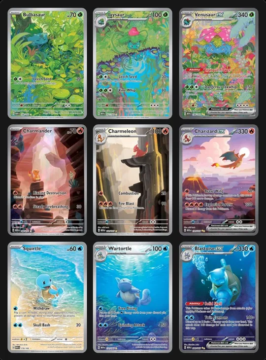

Starter Pokémon page
The starter Pokémon binder page

All nine regions
Each region's starters come grass first, then fire, then water, and their Pokédex numbers run straight through, so each row of nine numbers is one page.
| Region | Starters | Pokédex |
|---|---|---|
| Kanto Red and Blue | Bulbasaur, Charmander, Squirtle | 1 to 9 |
| Johto Gold and Silver | Chikorita, Cyndaquil, Totodile | 152 to 160 |
| Hoenn Ruby and Sapphire | Treecko, Torchic, Mudkip | 252 to 260 |
| Sinnoh Diamond and Pearl | Turtwig, Chimchar, Piplup | 387 to 395 |
| Unova Black and White | Snivy, Tepig, Oshawott | 495 to 503 |
| Kalos X and Y | Chespin, Fennekin, Froakie | 650 to 658 |
| Alola Sun and Moon | Rowlet, Litten, Popplio | 722 to 730 |
| Galar Sword and Shield | Grookey, Scorbunny, Sobble | 810 to 818 |
| Paldea Scarlet and Violet | Sprigatito, Fuecoco, Quaxly | 906 to 914 |
Two layouts, compared
1. One evolution line per row. The page pictured above. The grass line runs along the top, fire through the middle and water along the bottom, each one evolving from left to right. Because the numbers run in the same order, this is also Pokédex order: Kanto's page is page one of a Pokédex binder.
2. One stage per row. The three starters you choose between sit side by side across the top, their middle forms below them and the final forms along the bottom. Each column is then one line, evolving downward.
One stage per row: the three choices across the top.
| Layout | Looks like | Best for |
|---|---|---|
| Line per row | Three evolutions, read left to right | Pokédex binders, a page per region |
| Stage per row | The choice at the start of the game | A display page, the front of a binder |
Nine pages, one binder
Put one region on each page and all nine fill nine pages, Kanto first and Paldea last. Open the binder anywhere and two regions face each other. Leave a pocket empty for any card you are still looking for, so it has a place waiting when you find it. For more on keeping a binder in order, see how to organize Pokémon cards in a binder.
One set, matching borders
Cards from the same set share one frame and one style, so the page looks made to go together. For Kanto, Scarlet & Violet 151 has all nine as regular cards, numbered 1 to 9 like the Pokédex, and again as full-art cards, which is what the page at the top of this guide is made from. Put the regular cards on one page and the full arts facing them, in the same pockets, and each Pokémon faces its twin. The original Base Set from 1999 also has all nine Kanto starters.
Try it before you sleeve
Moving nine cards around a real page is slow, and every move risks a scuff. Try the order on screen first, as many times as you like.
- Open the free page builder. No account needed.
- Type a name, such as Bulbasaur. The builder lists its cards with the set each one comes from.
- Tap one card for each Pokémon, in the order you want them. Pockets fill in the order you tap. For one line per row: Bulbasaur, Ivysaur, Venusaur, Charmander, Charmeleon, Charizard, Squirtle, Wartortle, Blastoise.
- Tap See page. Tap a card to take it out, then add another, until the page looks right.
- Keep the page with a free account, then sleeve the real cards in the same order.
Questions
How many starter Pokémon are there?
Three in each of the nine regions from Kanto to Paldea, 27 in all. Each one evolves twice, so every region's starters and their evolutions make nine Pokémon: one nine-pocket binder page per region.
How many binder pages do all the starters need?
Nine pages, one per region, for all 81 Pokémon in the starter lines. A binder with 10 or more nine-pocket pages holds the whole set with a page to spare.
Which set has all nine Kanto starters?
Scarlet & Violet 151 has all nine as regular cards, numbers 1 to 9, and again as full-art cards. The page pictured in this guide uses its full-art versions. The original Base Set from 1999 also has all nine.
Should the evolution lines go in rows or columns?
Rows if you want the page to follow the Pokédex: each row is one line, left to right as it evolves. Columns if you want the three starters you choose between side by side across the top.
Is the page builder free?
Yes. Planning a page needs no account. Keeping it makes a free account, which never asks for payment details.
More guides: Binder theme ideas · Eevee family page · Favorite Pokémon binder · Pokédex binder · Rainbow binder · Organize your binder · Binder page planner
Pokémon is a trademark of its owners. Beltstra is an independent app and is not affiliated with or endorsed by them.